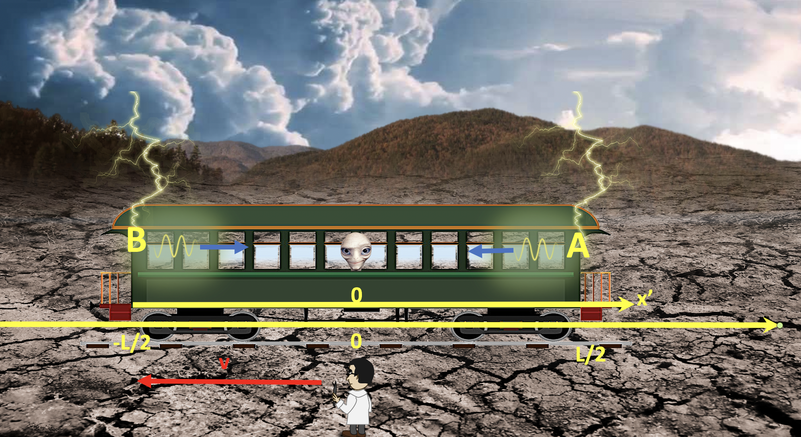

Forrige side🙂 🙁Et tankeeksperimentPADLET

La oss regne på situasjonen en gang til. Men nå flytter vi oss til passasjer P sitt referansesystem. I dette referansesystemet står toget stille mens bakken, professor O og x-aksen (som står fast på bakken) beveger seg bakover. Vi har innført en egen merket x′-akse som står fast på toget og måler alle posisjoner i forhold til toget. Passasjer P står på origo på denne aksen.